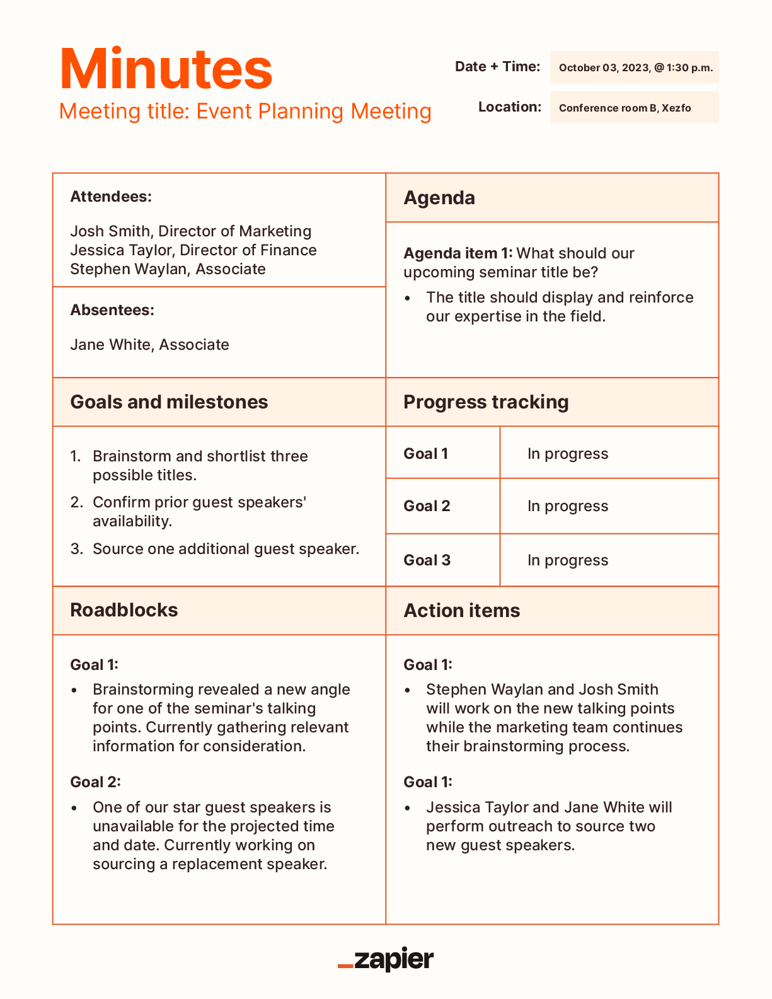

Meeting Minutes Formatting Second Brainstorm
Brainstorm
April 10th, 2024
Attendance
Attendees:
- Alice
- Bob
- David
- Felix
Absentees:
- Catherine
- Ethan
Agenda
- Absentees
- Suggestions from last meeting
- Newly proposed ideas
- Creating a template
- Example template
- Comments, questions, concerns
Old Business
We addressed concerns about Ethan having yet to attend a single meeting.
Effective immediately, Ethan was removed from the team.
Felix was in danger of being removed as well, but no action was taken
since he attended today's meeting.
We also went over the meeting minutes formatting suggestions we failed to
discuss in our last meeting due to running out of time. We will be
implementing the suggestion to add a list of absentees in addition to the
list of attendees.
New Business
A few new formatting ideas were suggested. Bob suggested a meeting summary,
which we will be implementing. Felix proposed that we remove the attendance
section, which of course was promptly shut down. David proposed that we
start recording each meeting and including the recording in the meeting
minutes, which we will also be implementing.
We also discussed how we would go about creating a more polished, stylized
template for our meeting minutes so that it would look nicer and more
organized. We ultimately decided that we won't be creating anything like
that at the moment, since the company isn't allowing us to use CSS or
JavaScript until future weeks.
An example meeting minutes template Bob presented as what we should strive for:
Bob presented this example because it's organized, simple, and effective.
Comments, Questions, Concerns
Felix expressed his concern that our attendance policy was too strict. We will consider his concern in future meetings.